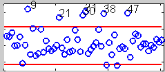

Flexible Statistics and Data Analysis Toolbox Examples
On this page
Robust Regression
Robust Multivariate Analysis
Robust Transformations
Classification
Dynamic scatter plot matrix
Plotting
Flexible Statistics and Data Analysis Toolbox Examples
More Examples
Robust Regression
Displays a GUI where it is possible to brush steps from the monitoring residuals plot
App

Displays a GUI where it is possible to brush units from the index plot of residuals
App
Examples of Robust Regression Using Robust Estimators
Script
Robust Multivariate Analysis
Displays a GUI where it is possible to brush steps from the monitoring distances plot
App
Examples of multivariate analysis using Robust Estimators
Script
Robust transformations Analysis
Displays a GUI where it is possible to brush steps from the fan plot
App
Classification
Examples of simulating groups with prefixed level of overlapping
Script
Scatter plot matrices with bivariate boxplots on the main diagonal
Selecting a Sample Size
Script
Plotting
Interactive Contour Plots
App

 Script
Script
 App
App